4.1.类
Windows 10
Python 3.8.8 @ MSC v.1928 64 bit (AMD64)
Latest build date 2021.06.03
类提供了一种组合数据和功能的方法。类通常是以下部分组成的集合：
- 函数（称为方法，method），包括特殊方法（又称为魔术方法）、私有方法、实例方法、类方法、静态方法
- 变量（称为类变量或类属性，class variable/class attribute），类变量是在类的所有实例之间共享的值，不是单独分配给每个实例的
- 计算出的属性（称为特性，property）
创建一个新类意味着创建一个新类型的对象，从而允许创建一个该类型的新实例。每个类的实例可以拥有保存自己状态的属性。对象可以包含任意数量和类型的数据。和模块一样，类也拥有 Python 天然的动态特性：它们在运行时创建，可以在创建后修改。在Python中，约定使用单数单词表示类名，其首字母大写。
Python 的类提供了面向对象编程的所有标准特性：
- 多态：可以在当前上下文不知道对象真实类型的情况下，调用对象的实现，从而可以对不同类型的对象执行相同的操作。
- 封装：一个对象对外部隐藏其部分状态和行为（为了隐藏相关工作原理的细节），仅对外部暴露有限的接口。
- 继承：根据已有类创建新的类。允许派生类继承多个基类，派生类可以覆盖基类的任何方法，派生类的方法可以调用基类中相同名称的的方法。
类实例
类的实例是以函数形式调用类对象来创建的。__new__方法将创建一个新实例，然后将该实例传递给类的__init__()方法。__init__()方法主要用于初始化实例，其参数包括新创建的实例self和在调用类对象时提供的参数。
在__init__()内，通过将属性分配给self来将其保存到实例中，这样的属性称为实例属性。例如，self.name = name表示将name属性保存在实例中。其中，点.运算符用于绑定属性或访问属性。
访问属性时，属性值可能来自多个不同的地方。可能来自实例独有的属性，也可能来自类的属性。访问属性时，Python 首先会检查实例，如果实例不包含该属性，则会对实例的类进行搜索。这是类与其所有实例共享其属性的底层机制。
继承
继承是一种创建新类的机制，目的是使用或修改现有类的行为。被继承的类称为基类或超类。新类称为派生类或子类。通过继承创建类时，所创建的类将“继承”其基类定义的属性。 但是，派生类可以重新定义基类的属性，并添加自己的新属性。
在class语句中用以逗号分隔的基类名称列表来指定继承，例如：
# class A inherits from class B and class C
class A(B, C):
pass
在 Python 2 中，一个类默认不继承任何基类，除非显式指定继承的基类，这种类称为 old-style class（旧式类）。
# class A does not inherit from any base class
class A:
def __init__(self):
pass
Python 2.2 引入了 new-style class（新式类），其建议新的类型通过如下方式定义：
# class A inherits from object
class A(object):
def __init__(self):
pass
Python 2.3 及后续版本为了保持向下兼容，同时提供以上两种类定义用以区分 old-style class 和 new-style class。Python 3 则完全废弃了 old-style class 的概念，在Python 3中，如果没有显式指定基类，类将默认继承 object 。因此，object 是所有Python 3对象的基类，它提供了一些常见方法（如__str__()，它可创建供print函数使用的字符串）的默认实现。
继承通常用于重新定义现有方法的行为。
继承是用功能稍微增强的点.运算符实现的。具体来讲，在搜索一个属性时，如果未在实例或实例的类中找到匹配项，将会继续搜索其基类。这个过程会一直继续下去，直到没有更多的基类可供搜索为止。
派生类重定义基类的方法后，不会再自动调用基类的同名方法。例如派生类重定义了__init__()，创建实例时便不会自动调用基类的__init__()方法。但有时候，派生类虽然重定义了__init__()，但是还想调用基类的__init__()方法来进行恰当的初始化。此时，派生类可以显式地调用基类的方法 。如果基类未定义__init__()，就可以忽略这一步。如果不知道基类是否定义了__init__()，可以尝试不提供任何参数的情况下调用它，因为始终存在一个不执行任何操作的默认__init__()实现。
# 定义一个人类
class Person:
def __init__(self, name, age):
self.name = name
self.age = age
def get_name(self):
return self.name
def get_age(self):
return self.age
# 定义一个美国人类
## 现在想给美国人在初始化的时候加上'性别'的属性
class American(Person):
# 重新定义__init__()会覆盖Person的__init__()方法
def __init__(self, name, age, gender):
# 显式调用基类的__init__()方法
Person.__init__(self, name, age)
self.gender = gender
def get_gender(self):
return self.gender
jackson = American(name="Cesar T. Mauck", age=14, gender="male")
print(jackson.get_age())
print(jackson.get_gender())
14
male
派生类显式地调用基类的方法并不总是好的。例如下面的例子：
# 定义一个华盛顿人类
class Washington(American):
def get_age(self):
return f"{self.age} years old"
def growing_up(self):
# 显式地调用基类中的原始方法
age = American.get_age(self)
age += 1
self.age = age
print("Washington people grow up one year old")
这个例子的微妙之处在于，American这个类其实没有实现get_age()方法。该方法是在Person类中实现的。尽管这段代码能够运行，但它可能会引起一些混淆（例如，American是否应该实现get_age()? ）。因此，替代解决方案是用super()函数，如下所示：
# 定义一个加利福尼亚人类
class California(American):
def get_age(self):
return f"{self.age} years old"
def growing_up(self):
## 实际上，因为get_age()方法在Person中定义
## 这里可以传入Person的任何一个派生类
age = super(California, self).get_age()
age += 1
self.age = age
print("Californians grow up one year old")
Terri = California("Terri H. Booth", 25, "female")
Terri.growing_up()
Californians grow up one year old
super(cls, instance)会返回一个特殊对象，该对象支持在基类上执行属性查找。如果使用该函数，Python将使用本来应该在基类上使用的正常搜索规则来搜索属性。有了这种方式，就无需写死方法位置，并且能更清晰地陈述你的意图（即你希望调用以前的实现，无论它是哪个基类定义的）。然而，super()的语法尚有不足之处。如果使用Python 3，可以使用简化的语句super().get_age()来执行上面示例中的计算。
多重继承
Python支持多重继承。通过让一个类列出多个基类即可指定多重继承。例如：
# 定义一个圣拉蒙人类
class SanRamon(California, Washington, American):
def growing_up(self):
pass
Edwin = SanRamon("Edwin A. Marcotte", 37, "male")
Edwin.get_age()
'37 years old'
使用多重继承时，属性的解析会变得非常复杂，因为可以使用很多搜索路径来绑定属性。
在使用了多重继承的类中查找属性时，会将所有基类按从“最特殊”的类到“最不特殊”的类这种顺序进行排列。然后在搜索属性时，就会按这个顺序搜索，直至找到该属性的第一个定义。对于任何给定的类，通过打印它的 __mro__ 属性即可查看基类的搜索顺序（或者调用mro()方法），例如：
SanRamon.__mro__
(__main__.SanRamon,
__main__.California,
__main__.Washington,
__main__.American,
__main__.Person,
object)
SanRamon.mro()
[__main__.SanRamon,
__main__.California,
__main__.Washington,
__main__.American,
__main__.Person,
object]
在大多数情况下，这个列表基于“有意义”的规则排列得出。也就是说，始终先检查派生类，然后再检查其基类，如果一个类具有多个基类，那么始终按类定义中列出的基类顺序检查这些基类。但是，基类的准确顺序实际上非常复杂，不是基于任何“简单的”算法，如深度优先或广度优先搜索。实际上，基类的顺序由 C3 线性化算法确定，可以在论文“A Monotonic Superclass Linearization for Dylan”（K. Barrett 等，发表于 OOPSLA’96）中找到该算法的介绍。该算法的一个需要注意的地方是，某些类层次结构将被 Python 拒绝并会抛出TypeError错误，例如：
try:
class SanRamon(American, California, Washington):
def growing_up(self):
pass
except TypeError as e:
print("TypeError", e)
TypeError Cannot create a consistent method resolution
order (MRO) for bases American, California, Washington
你可能已经注意到，SanRamon类的继承列表是从最不特殊到特殊的，因为American是California和Washington的基类。这也正是该类层次结构会出错的原因。具体的原因涉及C3算法的细节，限于篇幅，这里不展开叙述。关于Python MRO算法的详细介绍参考《4.2.多重继承和MRO》。
一般来说，在大多数程序中最好避免使用多重继承 。但是，多重继承有时可用于定义所谓的混合（mixin）类。混合类通常定义了要“混合到”其他类中的一组方法，目的是添加更多的功能（这与宏很类似）。通常，混合类中的方法将假定其他方法存在，并将以这些方法为基础构建。
多态动态绑定和鸭子类型
动态绑定（在继承背景下使用时，有时也称为多态性）是指在不考虑实例类型的情况下使用实例，只要以obj.attr的形式访问属性，就会按照一定的顺序搜索并定位attr：首先是实例本身，接着是实例的类定义，然后是基类。 查找过程会返回第一个匹配项。
这种绑定过程的关键在于，它不受对象 obj 的类型影响。因此，如果执行像 obj.name 这样的查找，对所有拥有 name 属性的 obj 都是适用的。
polymorphism 源自希腊语，意思是“有多种形态”。这大致意味着即便你不知道变量指向的是哪种对象，也能够对其执行操作，且操作的行为将随对象所属的类型（类）而异。也就是同一种调用形式，但有不同的执行效果。
在Python中，多态也称为鸭子类型（duck typing）。这个术语源自 James Whitcomb Riley 在17世纪写下的一句诗：
真不知道谁想出这个术语的，如果用数学术语来类比，鸭子类型相当于数学的公理化定义，不关心是什么，只关心有什么特性。
Python 程序员经常编写利用这种行为的程序。例如，如果想编写现有对象的自定义版本，可以继承该对象，也可以创建一个外观和行为像它但与它无任何关系的全新对象。后一种方法通常用于保持程序组件的松散耦合。例如，可以编写代码来处理任何种类的对象，只要该对象拥有特定的方法集。最常见的例子就是利用标准库中定义的各种“类似文件”的对象。尽管这些对象的工作方式像文件，但它们并不是继承自内置文件对象的。
实例方法
类中最常用的方法是实例方法，即将实例作为第一个参数传递给该方法。根据约定，这个参数名称为self，尽管所有合法的标识符都可以使用。self 参数指向对象本身。
self 参数很有用，甚至必不可少。如果没有它，所有的方法都无法访问对象本身。以下是实例方法的例子：
class Kls(object):
def __init__(self, data):
self.data = data
def printd(self):
print(self.data)
ik1 = Kls('arun')
ik2 = Kls('seema')
ik1.printd()
ik2.printd()
arun
seema

然后看一下代码和示例图片:
- 在1、2中，传递
data参数给__init__方法。 - 在3、4中，
self参数指向当前实例。我们不需要给方法提供实例，Python解释器自己会做这些操作。
静态方法
内容提要
以下两个代码示例介绍了静态方法的两个应用场景：
-
不需要访问实例对象或类对象的方法和属性，但与类有关的功能
-
创建构造函数
经常有一些跟类有关系的功能，但在运行时又不需要实例或类参与（比如更改环境变量或者修改其他类的属性）。当然可以在类定义之外写一个函数实现这些功能，但这样会扩散类内部的代码，不利于代码的维护。比如这样：
IND = 'ON'
def checkind():
return (IND == 'ON')
class Kls(object):
def __init__(self, data):
self.data = data
def do_reset(self):
if checkind():
print('Reset done for:', self.data)
def set_db(self):
if checkind():
self.db = 'new db connection'
print('DB connection made for:', self.data)
ik1 = Kls(12)
do_reset(ik1) # Reset done for: 12
set_db(ik1) # DB connection made for: 12
如果使用@staticmethod就能把相关的代码放到对应的位置了。
IND = 'ON'
class Kls(object):
def __init__(self, data):
self.data = data
@staticmethod
def checkind():
return (IND == 'ON')
def do_reset(self):
if self.checkind():
print('Reset done for:', self.data)
def set_db(self):
if self.checkind():
self.db = 'New db connection'
print('DB connection made for: ', self.data)
ik1 = Kls(12)
ik1.do_reset()
ik1.set_db()
Reset done for: 12
DB connection made for: 12
实际上，静态方法是一种普通函数，只不过它们正好位于类定义的命名空间中，因为它不会对任何实例类型进行操作。
如果在编写类时需要采用很多不同的方式来创建新实例，则常常使用静态方法。因为类中只能有一个 __init__() 函数，所以替代的创建函数通常按如下方式定义：
import time
class Date(object):
def __init__(self, year, month, day):
self.year = year
self.month = month
self.day = day
@staticmethod
def now():
t = time.localtime()
return Date(t.tm_year, t.tm_mon, t.tm_mday)
@staticmethod
def tomorrow():
t = time.localtime(time.time()+86400)
return Date(t.tm_year, t.tm_mon, t.tm_mday)
# 创建日期的示例
a = Date(1967, 4, 9)
b = Date.now() # 调用静态方法now()
c = Date.tomorrow() # 调用静态方法tomorrow()
类方法
内容提要
以下两个代码示例介绍了类方法的两个应用场景：
-
在继承的场景中，创建构造函数
-
动态更新类
类方法是将类本身作为对象进行操作的方法。类方法使用 @classmethod 装饰器定义，与实例方法不同，Python解释器会将类本身传递给类方法的第一个参数（一般将该参数命名为cls）。例如：
class Times(object):
factor = 1
@classmethod
def mul(cls, x):
return cls.factor * x
class TwoTimes(Times):
factor = 2
x = TwoTimes.mul(4) # 调用Times.mul(TwoTimes, 4) -> 8
在这个例子中，请注意类TwoTimes是如何作为对象传递给mul()的。尽管这个例子有些深奥，但类方法还有一些实用且巧妙的用法。例如，你定义了一个EuroDate类，它继承自前面给出的Date类并对其略加定制：
class EuroDate(Date):
# 修改字符串转换，以使用欧洲日期格式
def __str__(self):
return "%02d/%02d/%4d" % (self.day, self.month, self.year)
print(type(EuroDate.now()))
print(type(EuroDate.tomorrow()))
<class '__main__.Date'>
<class '__main__.Date'>
由于该类继承自Date，所以它拥有Date的所有特性。但是now()和tomorrow()方法稍微有点不同。例如，如果调用EuroDate.now()，则会返回Date对象，而不是EuroDate对象。类方法可以解决该问题：
class Date(object):
def __init__(self, year, month, day):
self.year = year
self.month = month
self.day = day
@classmethod
def now(cls):
t = time.localtime()
return cls(t.tm_year, t.tm_mon, t.tm_mday)
@classmethod
def tomorrow(cls):
t = time.localtime(time.time() + 86400)
return cls(t.tm_year, t.tm_mon, t.tm_mday)
class EuroDate(Date):
# 修改字符串转换，以使用欧洲日期格式
def __str__(self):
return "%02d/%02d/%4d" % (self.day, self.month, self.year)
print(type(Date.now())) # 调用Date.now(Date)并返回Date
print(type(EuroDate.now())) # 调用Date.now(EuroDate)并返回EuroDate
<class '__main__.Date'>
<class '__main__.EuroDate'>
类方法除了用于创建构造函数，另一个例子是动态更新类。例如我们想动态更新一个类属性：
class ModelManager(object):
# All model instance are saved in 'models' attribute
models = {}
def __init__(self, model_name):
# Load model
pass
@classmethod
def load_model(cls, model_name):
cls.models[model_name] = cls(model_name)
@classmethod
def get_model(cls, model_name):
return cls.models.get(model_name, None)
def predict(self):
return "The prediction result is 1."
print(ModelManager.models)
model_name = "svm"
ModelManager.load_model(model_name)
model = ModelManager.get_model(model_name)
model.predict()
print(ModelManager.models)
{}
{'svm': <__main__.ModelManager object at 0x000001DF3360FF10>}
当然，除了使用类方法，也可以在实例方法中显式调用类属性，达到动态更新类的效果，例如我们要获取实例数：
class Kls(object):
no_inst = 0
def __init__(self):
Kls.no_inst = Kls.no_inst + 1
@classmethod
def get_no_of_instance(cls_obj):
return cls_obj.no_inst
ik1 = Kls()
ik2 = Kls()
print(ik1.get_no_of_instance())
print(Kls.get_no_of_instance())
2
2
如果要用实例方法实现上述例子的话，就得创建一个实例对象，这意味着我们必须要给这个实例对象命名。在编程中，给过多的变量命名，有时是一个头疼的问题。
在类外面写一个函数也可以实现这样的效果，但不利于代码的维护。
def get_no_of_instances(cls_obj):
return cls_obj.no_inst
class Kls(object):
no_inst = 0
def __init__(self):
Kls.no_inst = Kls.no_inst + 1
ik1 = Kls()
ik2 = Kls()
print(get_no_of_instances(Kls))
2
实例方法、静态方法、类方法对比
在实例方法和类方法中，Python默认将当前实例或者类对象传给方法的第一个参数（非指定默认值的参数），如果方法不设置参数，便会报错：
class Kls(object):
def __init__(self, data):
self.data = data
def instance_method_no_self():
print("不接收实例")
def instance_method(*arg):
print('Instance:', arg)
@staticmethod
def static_method(*arg):
print('Static:', arg)
@classmethod
def class_method_no_cls():
print("不接收类对象")
@classmethod
def class_method(*arg):
print('Class:', arg)
ik3 = Kls('arun')
try:
ik3.instance_method_no_self()
except TypeError as e:
print("TypeError:", e)
try:
ik3.class_method_no_cls()
except TypeError as e:
print("TypeError:", e)
TypeError: instance_method_no_self() takes 0 positional arguments but
1 was given
TypeError: class_method_no_cls() takes 0 positional arguments but 1
was given
实例方法、类方法必须设置参数接收类对象：
ik3.instance_method()
ik3.class_method()
Instance: (<__main__.Kls object at 0x000001DF3366B8E0>,)
Class: (<class '__main__.Kls'>,)
静态方法则不会传入实例或类对象：
ik3.static_method()
Static: ()
如果实例方法不设置参数，只能通过类去调用，因为类调用实例方法时，不会传入类或者实例。 应该避免这种用法，没参数的方法应该加上@staticmethod装饰器：
Kls.instance_method_no_self()
不接收实例
关于静态方法和类方法需要注意的一点是，Python 不会在与实例方法独立的命名空间中管理它们。因此，可以通过实例或类调用它们。例如：
Kls.class_method()
Kls('arun').class_method()
Kls.static_method()
Kls('arun').static_method()
Class: (<class '__main__.Kls'>,)
Class: (<class '__main__.Kls'>,)
Static: ()
Static: ()
这可能很容易引起混淆，因为对 Kls('arun').cmethod2() 的调用与实例Kls('arun')没有任何关系。 这种行为是 Python 对象系统与其他面向对象语言（如 Smalltalk 和 Ruby）对象系统的区别之一。在这些语言中，类方法与实例方法是严格分开的。
而实例方法必须通过实例调用，因为需要传入实例 。
总结
- 实例可以调用这三种方法
- 类只能调用类方法和静态方法

特性
@property——把方法变为属性
通常，访问实例或类的属性时，返回的会是所存储的值。特性（property）是一种特殊的属性，访问它时会计算它的值。下面是一个简单的例子：
import math
class Circle(object):
def __init__(self, radius):
self.radius = radius
# Circle的一些附加特性
@property
def area(self):
return math.pi * self.radius ** 2
@property
def preimeter(self):
return 2 * math.pi * self.radius
得到的Circle对象的行为如下：
c = Circle(4.0)
print(c.radius)
print(c.area)
print(c.preimeter)
try:
c.area = 2
except AttributeError as e:
print("AttributeError:", e)
4.0
50.26548245743669
25.132741228718345
AttributeError: can't set attribute
在这个例子中，Circle 实例存储了一个实例变量 c.radius。c.area 和 c.perimeter 是根据该值计算得来的。@property 装饰器支持以简单属性的形式访问后面的方法，无需像平常一样添加额外的 ()来调用该方法。对象的使用者很难发现正在计算一个属性，除非在试图重新定义该属性时生成了错误消息（如上面的 AttributeError 异常所示）。
这种特性使用方式遵循所谓的统一访问原则。 实际上，如果定义一个类，尽可能保持编程接口的统一总是不错的。如果没有特性，将会以简单属性（如 c.radius）的形式访问对象的某些属性，而其他属性将以方法（如 c.area()）的形式访问。费力去了解何时添加额外的()会带来不必要的混淆。特性可以解决该问题。
Python 程序员很少认识到，方法本身是被隐式地作为一类特性处理的。 考虑下面这个类：
class Foo(object):
def __init__(self, name):
self.name = name
def spam(self, x):
print("%s, %s" % (self.name, x))
Foo("d").spam
<bound method Foo.spam of <__main__.Foo object at 0x000001DF33676130>>
用户创建 f = Foo("Guido") 这样的实例然后访问 f.spam 时，不会返回原始函数对象 spam，而是会得到所谓的绑定方法（bound method），bound method 是一个对象，代表将在对象上调用 () 运算符时执行的方法调用。bound method 有点类似于已部分计算的函数，其中的self参数已经填入，但其他参数仍然需要在使用()调用该函数时提供。这种 bound method 对象是由在后台执行的特性函数静默地创建的。使用 @staticmethod 和 @classmethod 定义静态方法和类方法时，实际上就指定了使用不同的特性函数，以不同的方式处理对这些方法的访问。 例如，@staticmethod仅“按原样”返回方法函数，不会进行任何特殊的包装或处理。
特性还可以截获操作权，以设置和删除属性。这是通过向特性附加其他 setter 和 deleter 方法来实现的，如下所示：
class Foo(object):
def __init__(self, name):
self.__name = name
@property
def name(self):
return self.__name
@name.setter
def name(self, value):
if not isinstance(value, str):
raise TypeError("Must be a string!")
self.__name = value
@name.deleter
def name(self):
raise TypeError("Can't delete name")
在这个例子中，首先使用 @property 装饰器和相关方法将属性 name 定义为只读特性。后面的 @name.setter 和 @name.deleter装饰器将其他方法与 name 属性上的设置和删除操作相关联。这些方法的名称必须与原始特性的名称完全匹配。在这些方法中，请注意实际的名称值存储在属性 __name 中。所存储属性的名称无需遵循任何约定，但它必须与特性名称不同，以便将它与特性的名称区分开。
在以前的代码中，通常会看到用 property(getf=None, setf=None, delf=None, doc=None) 函数来定义特性，往其中传入一组名称不同的方法，用于执行相关操作。例如：
class Foo(object):
def getname(self):
return self.__name
def setname(self, value):
if not isinstance(value, str):
raise TypeError("Must be a string!")
self.__name = value
def delname(self):
raise TypeError("Can't delete name")
name = property(getname, setname, delname)
这种老方法仍然可以使用，但装饰器版本会让类看起来更整洁。例如，如果使用装饰器，get、 set 和 delete 函数将不会显示为方法。
数据封装和私有属性
默认情况下，类的所有属性和方法都是“公共的”。这意味着对它们的访问没有任何限制。这还暗示着，在基类中定义的所有内容都会被派生类继承，并可从派生类内进行访问。在面向对象的应用程序中，通常我们不希望发生这种行为，因为它会暴露对象的内部实现，可能导致在派生类中定义的对象与在基类中定义的对象之间发生命名空间冲突。
Note
这意味着派生类可以覆盖基类的定义。
为了解决该问题，类中所有以双下划线开头的名称（如__Foo）都会自动变形，形成具有_Classname__Foo形式的新名称。 这提供了一种在类中添加私有属性和方法的有效方式，因为派生类中使用的私有名称不会与基类中使用的相同私有名称发生冲突，如下所示：
class A(object):
def __init__(self):
self.__X = 3 # 变形为self._A__X
def __spam(self): # 变形为_A__spam()
print("A")
def bar(self):
self.__spam() # 只调用A.__spam()
class B(A):
def __init__(self):
A.__init__(self)
self.__X = 37 # 变形为self._B__X
def __spam(self): # 变形为_B__spam()
print("B")
b = B()
# 派生类的定义没有覆盖基类的定义
b.bar()
A
尽管这种方案似乎隐藏了数据，但并没有严格的机制来实际阻止对类的“私有”属性进行访问。特别是如果已知类名称和相应私有属性的名称，则可以使用变形后的名称来访问它们。通过重定义dir()方法，类可以降低这些属性的可见性，dir()方法提供了检查对象的dir()函数所返回的名称列表。
尽管这种名称变形似乎是一个额外的处理步骤，但变形过程实际上只在定义类时发生一次。它不会在方法执行期间发生，也不会为程序的执行添加额外的开销。而且要知道，名称变形不会在getattr()、hasattr()、setattr()或delattr()等函数中发生，在这些函数中，属性名被指定为字符串。对于这些函数，需要显式使用变形名称（如_Classname__name）来访问属性。
建议在定义可变属性时，通过特性来使用私有属性。这样，就可鼓励用户使用特性名称，而无需直接访问底层实例数据（如果你在实例开头添加了一个特性，可能不想采用这种访问方式）。
通过为方法提供私有名称，超类可以阻止派生类重新定义和更改方法的实现。 例如，示例中的A.bar()方法只调用A.__spam()，无论 self 具有何种类型，或者派生类中是否存在不同的__spam()方法都是如此。
最后，不要混淆私有类属性的命名和模块中“私有”定义的命名。一个常见的错误是，在定义类时，在属性名上使用单个前导下划线来隐藏属性值（如_name）。在模块中，这种命名约定可以阻止通过 from module import * 语句导出名称。 这意味着单下划线开头的定义只能被类本身和其派生类访问。但是在类中，这种命名约定既不能隐藏属性，在某个类继承该类并使用相同名称定义一个新属性或方法时，也不能阻止出现名称冲突。
对象表示和属性绑定
从内部实现上看，实例是使用字典来实现的，可以通过实例的 __dict__ 属性访问该字典。这个字典包含的数据对每个实例而言都是唯一的，如下所示：
class Account(object):
def __init__(self, name, balance):
self.name = name
self.balance = balance
a = Account("Guido", 1100.0)
a.__dict__
{'name': 'Guido', 'balance': 1100.0}
可以在任何时候向实例添加新属性，例如：
a.number = 123456 # 将属性'number'添加到 a.__dict__
对实例的修改始终会反映到局部 __dict__ 属性中。同样，如果直接对 __dict__ 进行修改，所做的修改也会反映在实例的属性中。
实例通过特殊属性 __class__ 链接回它们的类。类本身也只是对字典的浅层包装，你可以在实例的 __dict__ 属性中找到这个字典。可以在类字典中找到各种方法。例如：
a.__class__
__main__.Account
Account.__dict__.keys()
dict_keys(['__module__', '__init__', '__dict__', '__weakref__',
'__doc__'])
最后，通过特殊属性 __bases__ 中将类链接到它们的基类，该属性是一个基类元组。这种底层结构是获取、设置和删除对象属性的所有操作的基础。
只要使用 obj.name = value 设置了属性，特殊方法 obj.__setattr__("name", value) 就会被调用。如果使用 del obj.name 删除了一个属性，就会调用特殊方法 obj.__delattr__("name")。这些方法的默认行为是修改或删除 obj 的局部 __dict__ 的值，除非请求的属性正好是一个特性或描述符。在这种情况下，设置和删除操作将由与该特性相关联的设置和删除函数执行。
在查找属性（如 obj.name）时，将调用特殊方法 obj.__getattrribute__("name") 。该方法执行搜索来查找该属性，这通常涉及检查特性、查找局部 __dict__ 属性、检查类字典以及搜索基类。如果搜索过程失败，最终会尝试调用类的 __getattr__() 方法（如果已定义）来查找该属性。如果这也失败，就会抛出 AttributeError 异常。
如果有必要，用户定义的类可以实现其自己的属性访问函数。例如：
import math
class Circle(object):
def __init__(self, radius):
self.radius = radius
def __getattr__(self, name):
if name == 'area':
return math.pi * self.radius ** 2
elif name == 'perimeter':
return 2 * math.pi * self.radius
else:
return object.__getattr__(self, name)
def __setattr__(self, name, value):
if name in ['area', 'perimeter']:
raise TypeError("%s is readonly" % name) from None
object.__setattr__(self, name, value)
c = Circle(2)
print(c.area)
try:
c.area = 10
except TypeError as e:
print("TypeError:", e)
12.566370614359172
TypeError: area is readonly
重新实现这些方法的类应该可以依靠 object 中的默认实现来执行实际的工作。这是因为默认实现能够处理类的更高级特性，如描述符和特性。
一般来讲，类很少重新定义属性访问运算符。但是，在编写通用的包装器和现有对象的代理时，通常会使用属性访问运算符。通过重新定义 __getattr__()、__setattr__() 和 __delattr__()，代理可以捕获属性访问操作，并透明地将这些操作转发给另一个对象。
__slots__
通过定义特殊变量 slots，类可以限制对合法实例属性名称的设置，如下所示：
class Account(object):
def __init__(self, name, balance):
self.name = name
self.balance = balance
__slots__ = ('name', 'balance')
a = Account("Guido", 1100.0)
try:
a.date = "12-12"
except AttributeError as e:
print("AttributeError:", e)
AttributeError: 'Account' object has no attribute 'date'
定义__slots__时，可以将实例上分配的属性名称限制为指定的名称，否则将引发 AttributeError 异常。这种限制可以阻止其他人向现有实例添加新属性，即便用户将属性名称写错，也不会创建出新的属性来。
在实际使用中，__slots__从未被当作一种安全的特性来实现。它实际上是对内存和执行速度的一种性能优化。 使用__slots__的类的实例不再使用字典来存储实例数据，转而采用一种基于数组的更加紧凑的数据结构。在会创建大量对象的程序中，使用__slots__可以显著减少减少内存占用和执行时间。
注意，__slots__与继承的配合使用需要一定的技巧。如果类继承自使用__slots__的基类，那么它也需要定义__slots__来存储自己的属性（即使它不会添加任何属性也是如此），这样才能利用__slots__提供的优势。如果忘记了这一点，派生类的运行速度将更慢，占用的内存也更多，比完全不使用__slots__时情况更糟。
__slots__的使用还会破坏期望实例具有底层__dict__属性的代码。尽管这一点通常不适用于用户代码，但对于支持对象的实用库和其他工具，其代码可能要依靠__dict__来调试、序列化对象以及执行其他操作。
最后，如果类中重新定义了__getattribute__()、__getattr__()和__setattr__()等方法，__slots__的存在不会对它们的调用产生任何影响。但是，这些方法的默认行为将考虑到__slots__。此外应该强调一点，没有必要向__slots__添加方法或特性名称，因为它们存储在类中，而不是存储在每个实例中。